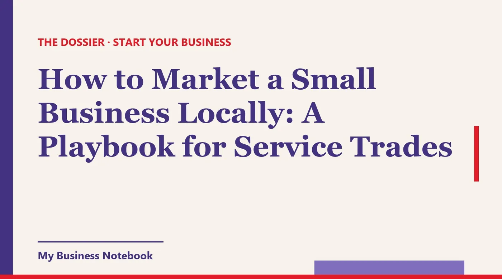

How to Market a Small Business Locally: A Playbook for Service Trades
You're good at the work. The problem is that not enough people know you exist. Generic marketing advice won't fix that, because a house cleaner, a plumber and a car detailer win customers in different ways. Here's the shared base every service trade needs, then a short playbook for six of them, with the rules to respect on reviews, flyers and email.

The short answer
To market a small business locally, pick the two or three channels your specific trade's customers actually use, and work them every week. A house cleaner, a plumber and a car detailer don't win jobs the same way, so they shouldn't market the same way.
The base is shared: a verified Google Business Profile, reviews from real customers, and your name visible on the street. After that, each trade has its own shortcut. This playbook walks through six of them.
How to market a local business: the base every trade needs
Before any trade-specific trick, get three things right. They cost little or nothing, and every other tactic leans on them.
1. A Google profile set up for a service-area business
Most trades go to the customer. Google's rules for service-area businesses are clear: if you don't serve customers at your address, remove it from your profile and list the cities or ZIP codes you cover instead. You can set up to 20 service areas, and Google says the whole area shouldn't stretch beyond about 2 hours of driving from your base.
We won't repeat the full setup here. Our guide on how to get your new business noticed covers the profile, verification and directories step by step.
2. Reviews, asked for every single time
For a trade, reviews do the selling before you ever pick up the phone. Google lets you share a review link or a QR code. Put it on your invoice, your text message after the job, and the card you leave behind.
Two rules to respect. Google prohibits offering free or discounted services in exchange for a review. And the FTC's rule on consumer reviews, in effect since October 21, 2024, bans fake reviews and bans tying any reward to a positive review. Ask, then let people say what they think.
3. Your name on the street
Your truck, your yard signs and your uniform are ads that run all day. A clean vehicle lettered with your trade, your phone number and your service area works in every neighborhood you drive through.
A quick legal note on flyers: federal law (18 U.S.C. 1725) makes it an offense to put unstamped circulars in a mailbox approved by the Postal Service. Door hangers go on the door, never in the box. If you want every home on a route covered legally, see Every Door Direct Mail below.
How to market a cleaning business
Cleaning is a trust business. People are handing you their keys, so proof that you're reliable beats any clever slogan.
- Lead with recurring service. A one-time deep clean is nice. A weekly or biweekly client is what keeps you in business. Make the recurring offer the first thing people see.
- Work one neighborhood at a time. Once you clean one house on a street, ask that client if you can mention them to neighbors. Tight routes also mean less driving between jobs.
- Go after commercial accounts directly. Small offices, dental practices, property managers who need move-out cleans. These buyers don't browse Instagram. You find them and contact them.
Be specific in your profile and on your page: whether you bring your own supplies, whether you're insured, and what "standard clean" includes. Vague offers get vague inquiries.
How to market a landscaping business
Landscaping sells itself when people can see it. Your finished lawns are your best billboard, so make every job visible.
- Yard signs on every job, with the homeowner's permission. A neat sign on a freshly edged lawn does more than a stack of flyers.
- Before and after photos for your Google profile, from the same angle, in good light. Post them while the season is still on.
- Sell the season, not the visit. Spring cleanup, weekly mowing, fall leaves, then snow removal if you offer it. Pitch the whole year in one conversation.
- Target HOAs and property managers. One contract can fill a whole day of your route.
Landscaping is also a natural fit for Every Door Direct Mail, because you can pick the exact routes around the neighborhoods you already serve.
How to market a handyman business
A handyman's problem is that people don't know what to call you for. The fix is simple: list the jobs, not the title.
"Handyman services" is vague. "TV mounting, drywall patches, door repairs, furniture assembly, faucet swaps" is something a customer can match to the problem sitting in their hallway. Use that list on your profile, your page and your truck.
- Partner with real estate agents. Every sale comes with a punch list before closing. An agent who knows you'll show up fast will send you work again and again.
- Talk to property managers and landlords, who need small repairs between tenants and hate chasing contractors.
- Check your state's rules on what a handyman can do without a contractor license, and say clearly on your page which jobs you take.
How to market a plumbing business
Plumbing is urgent work. A burst pipe at 10 p.m. doesn't wait for a quote comparison, so being findable and reachable right now matters more than anything else.
- Keep your hours accurate on your Google profile, including whether you take emergency calls. Answer the phone, or call back within minutes.
- Look at Google Local Services Ads. Google lists plumbers, handyman, cleaning, landscaping and lawn care among eligible categories, and you pay per lead rather than per click. Businesses that pass Google's screening can show a Google Verified badge. Check the categories and requirements for your area, since they include licensing and business registration.
- Build referral partners: general contractors, home inspectors, property managers and real estate agents all run into plumbing problems they can't fix themselves.
Put your license number on your page and your truck if your state issues one. For a plumber, it answers the customer's first question before they ask it.
How to market a painting business
Painting jobs are bigger tickets, and customers take longer to decide. Your job is to be the easiest painter to say yes to, and that starts with the estimate.
- Send written estimates fast, with a clear scope, the prep work included, and the paint brand. A detailed quote the same day often wins over a cheaper vague one.
- Follow up every estimate. Many homeowners collect three quotes and then forget. A polite follow-up a few days later is often what closes the job.
- Photograph your work, interiors and exteriors, and put the best shots on your profile.
- Go after commercial and repeat work: property managers repainting units, offices, restaurants between seasons.
How to market a detailing business
Car detailing is the most visual trade on this list. A 30-second before and after video does more than any description, so short video on the social network your customers use is worth the effort here.
- Offer packages with clear prices: interior, exterior, full detail. People decide faster when they don't have to call for a price.
- Push maintenance plans. A monthly wash and wipe-down turns a one-time buyer into a regular.
- Go where the cars are: used car dealerships, small fleets, office parks where you can detail cars in the lot during work hours (with the property's permission).
If you're mobile, set it up as a service-area business on Google, as described above, so you show up in the neighborhoods you drive to.
Every Door Direct Mail: the local mail option
Every Door Direct Mail lets you send postcards or flyers to every address on the postal routes you choose, without a mailing list. You map routes with the USPS online tool, address pieces to "Postal Customer," and drop them off at the Post Office.
USPS requires at least 200 pieces, and a retail mailing is capped at 5,000 pieces per day per ZIP Code. At the time of writing, the official page lists retail postage at $0.26 per piece. Printing is extra, and prices change, so check usps.com before you order.
How much does it cost to market a new business?
There's no standard number, and anyone who quotes you one without knowing your trade is guessing. What you can do is know what each job costs you to win.
The SBA recommends a marketing budget with a detailed cost breakdown, and comparing your marketing and sales costs to the revenue they bring in. For a trade, that means one simple habit: ask every new customer how they found you, and write it down.
- Free: your Google Business Profile, asking for reviews, referral partners, direct outreach to businesses.
- Low cost: yard signs, door hangers, business cards, vehicle lettering.
- Pay as you go: Every Door Direct Mail (postage per piece), Local Services Ads (per lead).
Start with the free column. Add paid channels once you know which customers say yes, and at what price.
Reaching businesses by email: the CAN-SPAM rules
Several of the best leads above are businesses: property managers, agents, dealerships, offices. Email is a fast way to reach them, and in the U.S. it's legal without prior consent, as long as you follow CAN-SPAM. The FTC says the law makes no exception for business-to-business email.
- Honest sender details and a subject line that matches the message.
- Identify the message as an ad, and include your valid physical postal address.
- Offer an easy opt-out, and honor it within 10 business days.
The FTC says each separate email in violation can bring penalties of up to $53,088. Keep your messages short, personal and relevant to their business.
One tool for the visibility and the outreach
Every trade above needs the same two engines: being found, and going after the jobs yourself. Doing both by hand means directories in one tab, a prospect list in a spreadsheet and follow-ups in your head. That's why we recommend Kaptor, a platform built for small businesses that need customers.
Kaptor
Kaptor puts in one place what usually takes a pile of separate tools:
- Visibility: your business listed on the directories that matter for your country and your trade (more than 120 listings), with the same details everywhere, tracked listing by listing, and alerts when something goes out of date.
- Google Business Profile: Kaptor helps you create or claim it, flags missing fields, and helps you ask for and track reviews.
- Prospecting: businesses to contact by trade and by area (property managers, agencies, dealerships and more), with contact details, ranked by AI from hottest to coldest, in a pipeline from "to contact" to "won."
- Email and follow-ups: sent from your own address or domain, automatic follow-ups, unsubscribe link included, replies in one inbox. Nothing goes out without your approval.
- Website or blog: no site yet? Kaptor generates one with a contact form. Already have one? It generates an SEO blog that points back to it.
You can create a free workspace to try it. Paid plans are $89 a month (Starter), $149 (Growth) and $499 (Agency), with no long-term contract.
Can customers in your area find you?
Kaptor's free audit looks for your business on the directories in your country and shows you where you're listed and where customers can't find you. No credit card, no sign-up.
Run my free auditKeep going: once the jobs start coming in, keep the money side steady with our practical guide to cash flow management for small business.
FAQ
How do I market my small business locally for free?
Set up and verify your Google Business Profile as a service-area business, ask every happy customer for a review, build referral partners in related trades, and contact local businesses that need your service directly. All of it costs time, not money.
How do I market a cleaning business?
Lead with recurring service, grow one neighborhood at a time through referrals, and contact commercial accounts like offices and property managers directly. Be specific about supplies, insurance and what each clean includes.
How do I market a landscaping business?
Make your work visible: yard signs on jobs with permission, before and after photos on your Google profile, and season-long packages. HOAs and property managers can fill a whole route with one contract.
Is it legal to put flyers in mailboxes?
No. Under 18 U.S.C. 1725, putting unstamped circulars in a mailbox approved by the Postal Service is an offense. Use door hangers on the door, or Every Door Direct Mail to reach every address on a route with paid postage.
Can I give customers a discount for leaving a review?
Not on Google: it prohibits incentives like free or discounted services in exchange for reviews. The FTC rule in effect since October 21, 2024 also bans fake reviews and rewards tied to positive reviews. Just ask, with a link or QR code.
How much does it cost to market a new business?
It depends on your trade and your area. Start with free channels, then track how each customer found you so you can compare what each channel costs with the jobs it brings in, as the SBA recommends.
Official sources
- Google Business Profile Help: Service-area businesses : removing your address, up to 20 service areas, about 2 hours of driving.
- Google Business Profile Help: Tips to get more reviews : review links, QR codes and the ban on incentives.
- Google Local Services Ads Help: About Local Services Ads : pay per lead, eligible categories, Google Verified badge.
- FTC: Consumer Reviews and Testimonials Rule, Questions and Answers : fake reviews and sentiment-based incentives banned since October 21, 2024.
- FTC: CAN-SPAM Act, A Compliance Guide for Business : rules for commercial email, including B2B.
- USPS: Every Door Direct Mail : how it works, minimum pieces, retail postage per piece.
- 18 U.S.C. 1725 (Legal Information Institute) : unstamped circulars in mailboxes.
- U.S. Small Business Administration: Marketing and sales : marketing budget and comparing costs to revenue.
- How to Advertise Your Business Locally for Free in the UK
- How to Get Your Business on Google Maps for Free (Step by Step)
- Got your ABN? Here's how to get your first customers
- How to Get Your New Business Noticed (Even With No Marketing Budget)
- Registered Your Sole Proprietorship? How to Get Your First Customers in Canada
- Sole Trader? How to Get Customers as a New Business
- Sole Trader in Ireland: From CRO Registration to Your First Clients